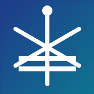

Sin conexión a internet
El sistema sigue abierto en modo offline. Puedes consultar los datos guardados y registrar movimientos: se enviarán solos cuando vuelva la señal.
Revisando cambios guardados…
Si la conexión no vuelve, revisa los datos móviles o el Wi-Fi.
Los cambios pendientes no se pierden al cerrar la aplicación.